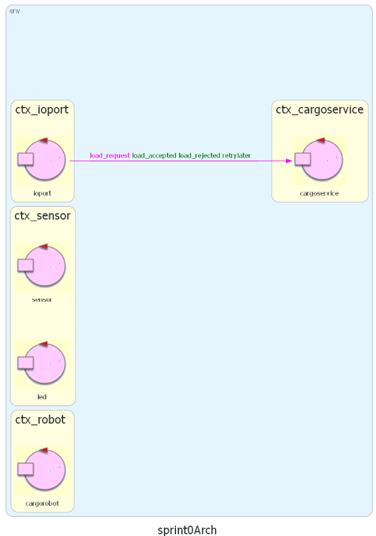
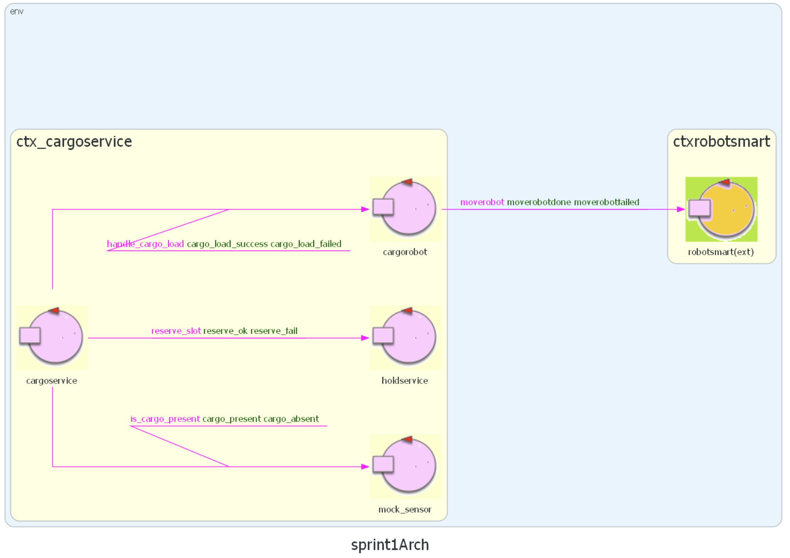

Punto di partenza
Dall'analisi dei requisiti svolta nello Sprint 0, abbiamo ottenuto una prima
architettura logica del sistema, composta dagli attori cargoservice, sensor, ioport
e cargorobot, ciascuno con il proprio contesto, oltre a un primo modello dati per Hold e
Slot.

Goal
L'obiettivo dello Sprint 1 è l'analisi del problema e la progettazione dei componenti
cargoservice e cargorobot, con particolare attenzione alle interazioni tra di essi durante il
ciclo di movimentazione dei container. In particolare:
- Realizzare la logica in grado di rispondere correttamente alle richieste di carico, in base allo stato
del sistema e alla disponibilità di slot liberi.
- Realizzare il ciclo di movimentazione del cargorobot, che consiste in:
- spostamento dalla posizione HOME alla IOPort
- prelievo del container, non appena disponibile
- spostamento allo slot5 per la marcatura
- spostamento allo slot libero
- ritorno alla posizione HOME
- Realizzare il modello della Hold, che tenga traccia dello stato degli slot (liberi/occupati) e
permetta di individuare uno slot libero.
Poiché sensor e pushbutton non sono ancora stati sviluppati (saranno oggetto degli Sprint 2
e 3), in questo sprint introduciamo delle versioni mock di questi componenti, sufficienti a
scambiare con cargoservice i messaggi necessari alla progettazione e al testing dei componenti
dello sprint.
Domande al committente
- In quale momento uno slot libero deve essere considerato "riservato": già alla risposta
load_accepted, oppure solo quando il cargorobot deposita fisicamente il container?
Risposta del committente:
- Una volta depositato il container nello slot, il cargorobot deve tornare alla posizione HOME?
Risposta del committente:
Analisi dei Requisiti
L'analisi dei requisiti è stata svolta durante lo Sprint 0, producendo un approfondito
documento di analisi dei requisiti.
Analisi del Problema
L'architettura del sistema risultante da questa analisi, definita in QAK, è
disponibile su GitHub
e non viene riportata integralmente in questo documento di analisi.
cargoservice
Iniziamo dall'analisi di cargoservice, l'attore principale del sistema, che implementa il core
business e orchestra gli altri componenti. Il suo sviluppo dipende dall'interazione con componenti non
ancora realizzati (sensor e pushbutton): per questo introduciamo dei mock in grado di
scambiare con cargoservice gli stessi messaggi che verranno prodotti dalle implementazioni reali.
In questo modo, cargoservice può essere sviluppato e testato già in questo sprint, ed è pronto a
interagire con i componenti reali senza richiedere modifiche alla sua logica interna.
Nei requisiti è presente una descrizione dettagliata del ciclo di movimentazione del cargorobot e degli
stati del sistema. Riportiamo qui l'intera evoluzione, soffermandoci sui passaggi che richiedono
un'analisi più approfondita:
- Il cargorobot si trova inizialmente in posizione HOME, mentre il sistema è nello stato
DISENGAGED.
- L'utente invia una richiesta di carico (load_request), alla quale cargoservice
risponde con:
- load_accepted: se il sistema è DISENGAGED, c'è almeno uno slot libero e la
IOPort è attualmente vuota. Il sistema passa allo stato ENGAGED.
- load_rejected: se il sistema è OUT_OF_SERVICE, a causa di un malfunzionamento
del sensor (Out Of Service detection implementata in Sprint 2), oppure se la hold è
già piena.
- retrylater: se il sistema è già ENGAGED, ovvero è già in corso un ciclo di
movimentazione, oppure se la IOPort è occupata al momento della richiesta.
- Una volta accettato il carico, l'utente ha 30 secondi per depositare un container davanti al
sensor presso la IOPort. Se il container non viene depositato entro tale tempo, il
sistema torna in DISENGAGED e lo slot riservato viene liberato.
- Non appena il container è disponibile, il cargorobot si sposta dalla posizione HOME alla
IOPort per prelevarlo.
- Il cargorobot si sposta allo slot5 per la marcatura, presso il quale sosta per circa
2 secondi.
- Il cargorobot si sposta allo slot libero riservato al momento della load_accepted e
deposita il container.
- Il cargorobot ritorna alla posizione HOME e il sistema torna nello stato DISENGAGED,
pronto per una nuova richiesta.
cargorobot
Per realizzare cargorobot non partiamo da un semplice DDR: l'azienda ci mette infatti a
disposizione diverse implementazioni per il controllo del robot, di natura differente, come già discusso
nello Sprint 0. È quindi
necessario scegliere quella più adatta al nostro sistema, analizzando le diverse opzioni disponibili:
- RobotObj26: è un
POJO che implementa il controllo del robot in Java. Questo ne limita l'utilità, dato che i suoi
comandi possono essere invocati solo in un ambiente Java; inoltre, è un componente altamente sincrono,
non adatto all'architettura a scambio di messaggi del nostro sistema.(Codice RobotObj26)
- RobotService26: è
un servizio che comunica tramite messaggi, e sarebbe quindi compatibile con l'architettura del nostro
sistema; tuttavia, la sua implementazione lascia al chiamante la responsabilità della logica di
instradamento del robot, passo dopo passo. (Codice RobotService26)
-
RobotSmart26: è
un servizio che comunica tramite messaggi, è
context-aware
ed è in grado di eseguire il
planning dei
movimenti. Questo lo rende il candidato migliore per implementare il nostro cargorobot: la logica di
movimento risiede interamente in RobotSmart26, mentre cargoservice non deve occuparsi di
pianificare i movimenti, ma solo di indicare a cargorobot le posizioni logiche di
destinazione (ad esempio SlotN oppure HOME). Inoltre, RobotSmart26 implementa la comunicazione a
messaggi attraverso QAK, ed è quindi già predisposto per comunicare con il nostro sistema.(Codice RobotSmart26)
Riportiamo i messaggi di RobotSmart26 relativi al movimento del robot; in particolare, utilizziamo
moverobot(TARGETX, TARGETY,STEPTIME). TARGETX e TARGETY sono le coordinate di
destinazione verso cui muovere il robot, mentre STEPTIME indica la lunghezza di ogni passo del
robot (nel nostro caso utilizziamo il valore di default).
Request moverobot : moverobot(TARGETX, TARGETY,STEPsTIME)
Reply moverobotdone : moverobotok(ARG) for moverobot
Reply moverobotfailed : moverobotfailed(PLANDONE, PLANTODO) for moverobot
Ci troviamo quindi a dover risolvere il problema di tradurre informazioni come slot, IOPort e home in
coordinate utilizzabili da RobotSmart26. Decidiamo di affidare questo compito a un attore dedicato,
chiamato proprio cargorobot, che solleva cargoservice dall'onere di gestire direttamente
la comunicazione con RobotSmart26, seguendo il
Single Responsibility Principle.
Per realizzare questa astrazione, utilizziamo un sistema di etichette: scegliamo cioè delle
stringhe per rappresentare i diversi punti di interesse della hold, note a holdcontroller,
che verranno poi tradotte da cargorobot in coordinate per RobotSmart26 tramite la seguente mappa:
val positions = hashMapOf(
"home" to arrayOf(0, 0),
"io_port" to arrayOf(4, 0),
"slot1" to arrayOf(1, 1),
"slot2" to arrayOf(1, 4),
"slot3" to arrayOf(3, 1),
"slot4" to arrayOf(3, 4),
"slot5" to arrayOf(2, 5)
)
Riteniamo che questo sistema di traduzione sia efficace, perché permette di nascondere le informazioni di
basso livello, come le coordinate, note solo ai servizi che ne fanno effettivamente uso, e di impostare
l'architettura su uno scambio di messaggi di livello più alto, basato sulle etichette.
Seguendo questo modello, l'unico messaggio che cargoservice scambierà con cargorobot
sarà handle_cargo_load(TARGET_SLOT): la richiesta di gestire lo spostamento di un container
verso lo slot precedentemente concordato con holdcontroller (analisi di hold e slot a seguire),
identificato dall'etichetta TARGET_SLOT. A questa richiesta possono corrispondere due risposte:
- cargo_load_success: quando il cargo viene spostato con successo nello slot indicato e il
robot riesce a tornare a HOME
- cargo_load_failed: in caso di errori durante il tragitto (per ora non è previsto alcun
piano di recovery)
//request e replies per comunicare con cargorobot
Request handle_cargo_load : handle_cargo_load(TARGET_SLOT)
Reply cargo_load_success : cargo_load_success(X) for handle_cargo_load
Reply cargo_load_failed : cargo_load_failed(X) for handle_cargo_load
Hold e Slot
Durante lo Sprint 0 abbiamo definito la hold e gli slot come POJO. In questo sprint,
però, decidiamo di introdurre anche l'attore holdcontroller, così da separare la logica di
business dalla logica dei dati. Sarà l'attore holdcontroller a comunicare con i POJO, mentre
cargoservice si limiterà a inviare richieste a holdcontroller. In particolare, sono
necessari dei messaggi per:
A seguito delle scelte fatte per cargoservice, cargorobot e RobotSmart26, è stato
necessario modificare il POJO Hold rispetto alla sua modellazione nello Sprint 0. In particolare,
è stato necessario rimuovere da Hold le coordinate, ora gestite da cargorobot e
sostituite dalle etichette, oltre a rimuovere la rappresentazione spaziale della hold (dimensioni, muri, ostacoli),
già presente all'interno di RobotSmart26.
Link a Hold e Slot aggiornati.
Test Plans
Nello Sprint 0 abbiamo definito un
insieme iniziale di test
che il sistema deve superare alla fine dello Sprint 1. I test completi possono essere trovati
su GitHub a questo link.
Riportiamo di seguito la lista descrittiva dei test implementati in questo sprint:
- T01_T02: richiesta di carico accettata e container depositato in tempo dopo una richiesta
accettata (verifica del check asincrono container_in)
- T03: container non depositato in tempo dopo una richiesta accettata: Timeout / DISENGAGED
- T04: container già presente all'IOPort al momento della richiesta accettata (verifica del
check sincrono is_cargo_present), risposta retrylater
- T05: richiesta rifiutata per Hold piena
- T06: richiesta rifiutata per Sensor guasto / OUT_OF_SERVICE
Questi test non sono rapidi, dato che richiedono il movimento effettivo del robot; possono tuttavia essere
comunque automatizzati grazie alla suite di testing JUnit. Prima di ogni test, infatti, la Hold viene
resettata e il robot riportato in posizione HOME, in modo da ripartire sempre da uno stato "pulito" del
sistema. Il codice dei test funzionali contiene commenti con una spiegazione approfondita delle pre- e
post-condizioni di ciascun test.
Per eseguire i test è necessario innanzitutto completare i
passaggi di deployment, quindi avviare il sistema tramite la Gradle Task
application:run e, infine, lanciare i test con il comando gradlew test dal terminale.
Per facilitare lo svolgimento dei test è stato necessario aggiungere alcuni messaggi aggiuntivi,
utilizzati per forzare artificialmente lo stato degli attori e ricreare così le precondizioni dei diversi
test. Questi messaggi sono:
//per comandare il mock sensor
Dispatch mock_cargo_present : mock_cargo_present(X)
Dispatch mock_cargo_absent : mock_cargo_absent(X)
//per comandare la hold
Dispatch test_hold_full : test_hold_full(X)
Dispatch test_hold_empty : test_hold_empty(X)
//per controllare il tempo di timeout di posizionamento del cargo in ioport
Dispatch setDelay : setDelay(X)
Architettura
Di seguito illustriamo l'architettura QAK prodotta al termine dello Sprint 1. Per maggiore chiarezza,
abbiamo nascosto gli attori che verranno implementati negli sprint successivi, in modo da evidenziare
quali componenti sono attualmente realizzati. Per una visione d'insieme dell'architettura finale
prototipale, si rimanda all'
architettura prodotta nello Sprint 0.

Deployment
Uno dei pregi del linguaggio di modellazione QAK è la possibilità di creare un modello eseguibile del
sistema. Al termine di questo sprint è stato infatti realizzato tale modello eseguibile, di cui è
possibile effettuare il deployment seguendo questi passi:
- Creare e avviare i container di supporto per l'ambiente virtuale del robot con docker compose,
definiti nel file
robotsmart26.yaml
(le istruzioni per il deployment si trovano in fondo al file).
- Collegarsi alla pagina web dell'ambiente virtuale, all'indirizzo
http://localhost:8085/.
- Importare il progetto sprint1 in Eclipse come progetto Gradle.
- Lanciare il sistema tramite la Gradle Task run, oppure con il comando
gradlew run.
- Per eseguire i test, in un prompt dei comandi separato, lanciare il comando
gradlew test.
Il sistema appena lanciato resta in stato DISENGAGED. Per osservare un ciclo di movimentazione, lanciare i
test.
Considerazioni Sprint 1 e Goal Sprint 2
Abbiamo rispettato la previsione sul tempo necessario per completare questo sprint: il lavoro totale è
stato di 22 ore uomo.
Suddivisione del lavoro:
- Andrea Gazzola: analisi del problema, stesura piani di test, stesura documento finale Sprint 1
- Francesco Roffia: analisi del problema, creazione del modello eseguibile QAK, stesura documento
finale Sprint 1
Goal Sprint 2
Il prossimo sprint, lo Sprint 2, si concentrerà sull'implementazione fisica del componente
sensor. Al momento sensor è realizzato come mock, mentre nello Sprint 2 verrà modellato
completamente sia nel modello QAK sia a livello fisico: si tratta infatti di un sensore di prossimità a
ultrasuoni gestito da un Raspberry Pi. Verrà inoltre implementato un semplice software di controllo del
sensore, per comunicarne lo stato al modello.
 and Francesco Roffia
and Francesco Roffia  GIT repo: https://github.com/FRoffia/ISS_26_Cargoservice
GIT repo: https://github.com/FRoffia/ISS_26_Cargoservice